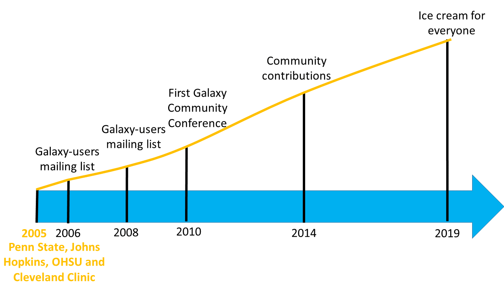
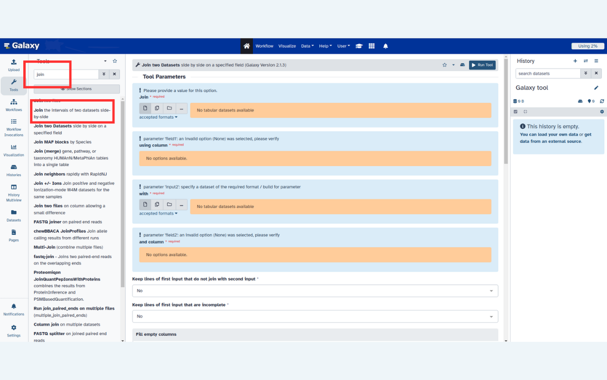
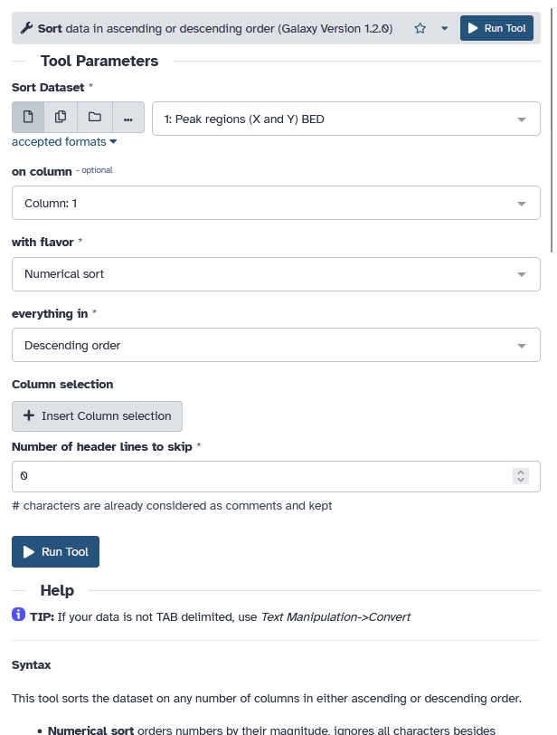

Introduction to Galaxy
Contributors
What is Galaxy?

Data Intensive analysis for everyone
- Versatile and reproducible workflows
- Web platform
- Open source under Academic Free License
- Developed at Penn State, Johns Hopkins, OHSU and Cleveland Clinic with substantial outside contributions
Speaker Notes
- The Galaxy Team is composed by bioinformaticians and software engineers
- OHSU = Oregon Health & Science University
- Workflows are similar to cooking recipes. This metaphor helps comprehension of workflows for users researchers, citizens and hobbyists that are not familiar with data intensive research.
Core values
- Accessibility
- Users without programming experience can easily upload/retrieve data, run complex tools and workflows, and visualize data
- Reproducibility
- Galaxy captures information so that any user can understand and repeat a complete computational analysis
- Transparency
- Users can share or publish their analyses (histories, workflows, visualizations)
- Pages: online Methods for your paper
Speaker Notes
accessible reproducible transparent research means sharing everything.
The Galaxy framework aims to make as simple as possible for researchers to:
- share their analyses
- track all used tools and versions
- check all parameters
- justify each step in the analysis
- publish the findings with all aforementioned information
Pages: interactive, web-based documents that describe a complete analysis.
Galaxy growth
- More than 8,500 ready to use tools for users
- More than 11,800 citations
- More than 170 public Galaxy resources
-
- 130+ public servers, many more non-public
-
- Both general-purpose and domain-specific
Speaker Notes
- The number of public Galaxy resources should be regularly updated.

Galaxy ecosystem

User Interface
Speaker Notes
So now that we know what Galaxy and the Galaxy Project are all about, let’s look at the Galaxy interface.
Main Galaxy interface

Home page divided into 3 panels
Top menu
| Link | Usage |
|---|---|
| galaxy-home (or Analyze Data) | go back to the homepage |
| Workflow | access existing workflows or create new one using the editable diagrammatic pipeline |
| Visualize | create new visualisations and launch Interactive Environments |
| Shared Data | access data libraries, histories, workflows, visualizations and pages shared with you |
| Help | links to Galaxy Help Forum (Q&A), Galaxy Community Hub (Wiki), and Interactive Tours |
| User | your preferences and saved histories, datasets, pages and visualizations |
Tools

- The tool search helps in finding a tool in a crowded toolbox
Tool interface
.pull-left[.image-50[]] .pull-right[
- A tool form contains:
- input datasets and parameters
- help, citations, metadata
- an
Executebutton to start a job, which will add some output datasets to the history
- New tool versions can be installed without removing old ones to ensure reproducibility ]
Speaker Notes
The tool form is generated from a simple XML file describing:
- the input datasets and their datatypes
- the tool parameters (numerical, text, boolean, selections, colour)
- the dependencies required to run the tool
- how to generate a command to execute the tool with the specified inputs and parameters
- the output datasets the tool should produce and their datatypes
- tests
- help, citations
- various metadata (e.g. the tool version)
Tools can be viewed as tiny LEGO pieces: each one solves a specific problem, and they can be combined together to build complex analysis pipelines.
Tool Shed
.image-50[]
- Free “app” store: Galaxy Tool Shed
- Thousands of tools already available
- Most software can be integrated
- If a tool is not available, ask the Galaxy community for help!
- Only a Galaxy admin can install tools
History
- Location of all analyses

- collects all datasets produced by tools
- collects all operations performed on the data
- For each dataset (the heart of Galaxy’s reproducibility), the history tracks
- name, format, size, creation time, datatype-specific metadata
- tool id, version, inputs, parameters
- standard output (
stdout) and error (stderr) - state (waiting, running, success, failed)
- hidden, deleted, purged
Speaker Notes
- We say datasets to refer to files as well as databases
- Purged means permanently deleted
Multiple histories
- You can have as many histories as you want
- each history should correspond to a different analysis
- and should have a meaningful name
.image-75[]
Speaker Notes
- Give it a good name so you can find it later, which can otherwise become difficult when you have a large number of old histories.
- You can drag and drop datasets between histories
History options menu
.pull-left[
History behavior is controlled by the History options (gear icon)
 ]
.pull-right[
.image-75[]
]
.pull-right[
.image-75[]
- Create new history (+ icon) will not make your current history disappear
-
To see all of your histories, use the history switcher
.image-75[
 ]
] - Copy Datasets from one history to another and save disk space for your quota ]
Speaker Notes
- Copying datasets between histories does not affect your quota, only a single copy of the file is stored on disk because datasets are never modified after creation.
Loading data
Speaker Notes
So now you know about the tools to manipulate data and the history where you can see your data, your inputs and outputs. Let’s discuss how to get data into Galaxy
Importing data
- Copy/paste some text
- Upload files from your local computer
- Upload data from an internet URL
- Upload data from online databases: UCSC, BioMart, ENCODE, modENCODE, Flymine etc.
- Import from Shared Data (libraries, histories, pages)
- Upload data from FTP
Datatypes
- Tools only accept input datasets with the appropriate datatypes
- When uploading a dataset, its datatype can be either:
- automatically detected
- assigned by the user
- Datasets produced by a tool have their datatype assigned by the tool
- To change the datatype of a dataset, either:
- galaxy-pencil Edit attributes and Datatypes (if original wrong), or
- galaxy-pencil Edit attributes and Convert
Speaker Notes
- When you upload data, Galaxy will try to autodetect the format of the data, but can sometimes get it wrong, so you may need to correct it later.
- Edit Attributes → Datatype is used to fix a wrongly assigned datatype
- Edit Attributes → Convert Formats creates a new dataset using a tool that converts the original dataset in the new format
- New datatypes can be added to the Galaxy code base, if missing
Reference datasets
Example: reference Genome
.pull-left[
- Genome build specifies which genome assembly a dataset is associated with
- e.g. mm10, hg38…
- Can be assigned by a tool or by the user
- Users can create custom genome builds
- New builds can be added by the admin ]
.pull-right[ ]
Speaker Notes
- Just like datatypes, you can specify which genome assembly your dataset is about. Some tools need to know this, and Galaxy can tell the tool for you.
Workflows
Speaker Notes
Now that you’ve got data into Galaxy, you know you can use tools to manipulate this data, and histories to keep track of what you’ve done. You’re only missing one key part: workflows. These help you easily reproduce the exact analysis that you ran.
Workflow Editor

- Extracted from a history
- Built manually by adding and configuring tools using the canvas
- Imported using an existing shared workflow
Speaker Notes
Biologist:
- workflows are great
- single button to run all of these 50 different tools
- a lot of work once to figure out analysis, but easy in the future to just rerun, go get coffee and wait for thing to be done :)
Bioinf / dev:
- Boxes are workflow steps
- 2 types: input and tool steps
- Steps are connected by arrows representing the flow of datasets
- Tool panel on the left with Inputs on top (to add input datasets and collections)
- Small tool form on the right
- Extracting a workflow from a history allows to easily convert an existing history into an analysis workflow
Why would you want to create workflows?
- Re-run the same analysis on different input data sets
- Change parameters before re-running a similar analysis
- Make use of the workflow job scheduling
- jobs are submitted as soon as their inputs are ready
- Create sub-workflows: a workflow inside another workflow
- Share workflows for publication and with the community
Speaker Notes
Potential information overload for newbies
Visualizations
.image-75[ ]
]
- Datatypes know what tools can be used to visualize datasets:
- Sequencing data has a button for visualizing in IGV
- Tabular data will prompt you to build charts
- Protein data can be seen in a 3D viewer
- Interactive environments: Jupyter, RStudio, etc
Sharing data
- Share everything you do in Galaxy - histories, workflows, and visualizations
- Directly using a Galaxy account’s email addresses on the same instance
- Using a web link, with anyone who knows the link
- Using a web link and publishing it to make it accessible to everyone from the Shared Data menu
See Sharing your History in Galaxy
Community
-
Support forum: Galaxy Help
- Community curated documentation: Galaxy Community Hub
- Events all around the world
- Galaxy Training for scientists, developers, admins, instructors: Galaxy Training Community
- Training questions? Chat with us on Gitter
Speaker Notes
- know was a lot
- we’ll come back
- slides are always available online
- first real analysis after the coffee?
Thank you!
This material is the result of a collaborative work. Thanks to the Galaxy Training Network and all the contributors! Tutorial Content is licensed under
Creative Commons Attribution 4.0 International License.
Tutorial Content is licensed under
Creative Commons Attribution 4.0 International License.